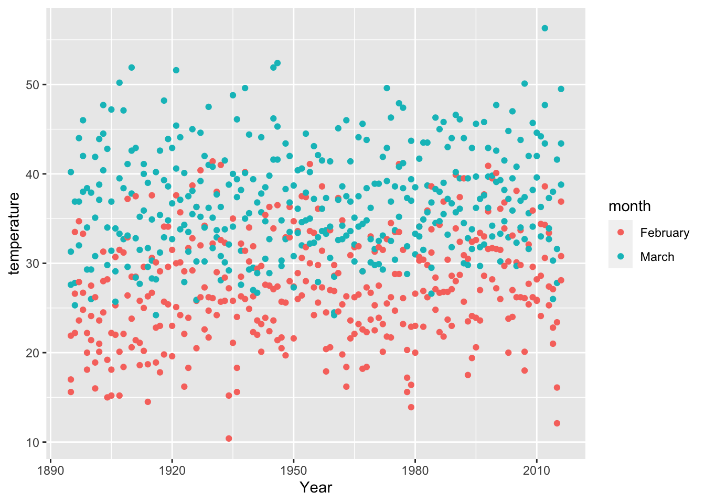

Module 6 Intro to Tidyverse
6.1 Before Class #6
Read Advice to Young (and Old) Programmers: A Conversation with Hadley Wickham by Philip Waggoner (2,599 words, 10 minutes)
6.2 What are R Packages?
An R package contains functions, and it might contain data. There are a lot of R packages out here (check the Comprehensive R Archive Network, i.e., CRAN, for a full list). That is one of the beautiful things about R, anyone can create an R package to share their code.
6.3 Installing Packages
The function to install packages in R is install.packages(). We will be working with TidyVerse extensively in this course, which is a collection of R packages carefully designed for data science.
Open your RStudio. In your console, enter the following to install tidyverse (this may take a while).
You need to install any package only once (remember to check for new package versions and to keep your packages updated). However, with every new R session, you need to load the packages you are going to use by using the library() function (a library is an installed R package in your computer).
Note that when calling the install.packages() function you need to enter the package name between quotation marks (e.g., “tidyverse”). When you call the library() function, you don’t use quotation marks (e.g., tidyverse).
6.4 Before You Load your Data
Although we are working within an R project, which sets the working directory automatically for you, it’s good practice to check what folder you are working from by calling the getwd() function.
## [1] "/Users/adriana/Desktop/ESOC214/Fall 2020/bookdown/ESOC_214_Fall_2020"You can list the contents of your working directory by using the dir() function.
We are going to create a data folder in our project, to keep things organized. Today we will be working with a data set that contains groundhog day forecasts and temperature. I cleaned up this data set already (no need for data tidying for now).
You can now list the contents of your data folder with the dir() function with a string that specifies the folder as a parameter.
## [1] "clean_beer_awards.csv"
## [2] "elnino.csv"
## [3] "GlobalLandTemperaturesByCountry.csv"
## [4] "GlobalLandTemperaturesByMajorCity.csv"
## [5] "groundhog_day.csv"
## [6] "nfl_salary.xlsx"
## [7] "olympic_history_athlete_events.csv"
## [8] "olympic_history_noc_regions.csv"
## [9] "passwords.csv"
## [10] "president_county_candidate.csv"
## [11] "spotify_songs_clean.csv"
## [12] "spotify_songs.csv"
## [13] "tweets.tsv"
## [14] "us_avg_tuition.xlsx"
## [15] "women_in_labor_force.csv"6.5 What’s our question again?
Here’s what we will focus on answering today, which is an excerpt from the Groundhog Day Forecasts and Temperatures kaggle page.
“Thousands gather at Gobbler’s Knob in Punxsutawney, Pennsylvania, on the second day of February to await the spring forecast from a groundhog known as Punxsutawney Phil. According to legend, if Phil sees his shadow the United States is in store for six more weeks of winter weather. But, if Phil doesn’t see his shadow, the country should expect warmer temperatures and the arrival of an early spring.”
So, in summary, our question is How accurate is Punxsutawney Phil’s winter weather forecast?
6.6 Load Data with Tidyverse
We will use the read_csv() function from the readr package (which is part of tidyverse) to read data in. Be careful, there’s a similar function that is read.csv() from base R. We do want to use the function with the _ (i.e., read_csv())
## Parsed with column specification:
## cols(
## Year = col_double(),
## Punxsutawney_Phil = col_character(),
## February_Average_Temperature = col_double(),
## February_Average_Temperature_Northeast = col_double(),
## February_Average_Temperature_Midwest = col_double(),
## February_Average_Temperature_Pennsylvania = col_double(),
## March_Average_Temperature = col_double(),
## March_Average_Temperature_Northeast = col_double(),
## March_Average_Temperature_Midwest = col_double(),
## March_Average_Temperature_Pennsylvania = col_double()
## )CHALLENGE
Reading warnings - R often prints out warnings in red (these are not always errors). What information did you get when loading your data?
6.7 Inspect Your Data
As with any other programming language, there are multiple ways to doing anything. As such, there are multiple ways of inspecting your data in R. Here are some of my favorite ways of inspecting my data:
## Rows: 122
## Columns: 10
## $ Year <dbl> 1895, 1896, 1897, 1898, 189…
## $ Punxsutawney_Phil <chr> "No Record", "No Record", "…
## $ February_Average_Temperature <dbl> 26.60, 35.04, 33.39, 35.37,…
## $ February_Average_Temperature_Northeast <dbl> 15.6, 22.2, 23.6, 24.8, 18.…
## $ February_Average_Temperature_Midwest <dbl> 21.9, 33.5, 34.7, 33.3, 22.…
## $ February_Average_Temperature_Pennsylvania <dbl> 17.0, 26.6, 27.9, 26.7, 20.…
## $ March_Average_Temperature <dbl> 39.97, 38.03, 38.79, 41.05,…
## $ March_Average_Temperature_Northeast <dbl> 27.6, 25.3, 32.0, 38.0, 29.…
## $ March_Average_Temperature_Midwest <dbl> 40.2, 36.9, 44.0, 46.0, 38.…
## $ March_Average_Temperature_Pennsylvania <dbl> 31.3, 27.8, 36.9, 42.0, 34.…## Year Punxsutawney_Phil February_Average_Temperature
## Min. :1895 Length:122 Min. :25.23
## 1st Qu.:1925 Class :character 1st Qu.:31.78
## Median :1956 Mode :character Median :33.69
## Mean :1956 Mean :33.80
## 3rd Qu.:1986 3rd Qu.:36.01
## Max. :2016 Max. :41.41
## February_Average_Temperature_Northeast February_Average_Temperature_Midwest
## Min. :10.40 Min. :20.30
## 1st Qu.:20.02 1st Qu.:29.62
## Median :22.95 Median :33.20
## Mean :22.69 Mean :32.69
## 3rd Qu.:25.98 3rd Qu.:36.30
## Max. :31.60 Max. :41.40
## February_Average_Temperature_Pennsylvania March_Average_Temperature
## Min. :15.20 Min. :35.44
## 1st Qu.:23.60 1st Qu.:39.38
## Median :26.95 Median :41.81
## Mean :26.52 Mean :41.70
## 3rd Qu.:29.80 3rd Qu.:43.56
## Max. :35.80 Max. :50.41
## March_Average_Temperature_Northeast March_Average_Temperature_Midwest
## Min. :24.20 Min. :28.50
## 1st Qu.:29.70 1st Qu.:39.08
## Median :32.55 Median :42.85
## Mean :32.37 Mean :42.57
## 3rd Qu.:34.80 3rd Qu.:45.60
## Max. :43.40 Max. :56.30
## March_Average_Temperature_Pennsylvania
## Min. :24.50
## 1st Qu.:32.95
## Median :35.85
## Mean :35.91
## 3rd Qu.:38.55
## Max. :47.70## [1] "Year"
## [2] "Punxsutawney_Phil"
## [3] "February_Average_Temperature"
## [4] "February_Average_Temperature_Northeast"
## [5] "February_Average_Temperature_Midwest"
## [6] "February_Average_Temperature_Pennsylvania"
## [7] "March_Average_Temperature"
## [8] "March_Average_Temperature_Northeast"
## [9] "March_Average_Temperature_Midwest"
## [10] "March_Average_Temperature_Pennsylvania"## [1] "Year"
## [2] "Punxsutawney_Phil"
## [3] "February_Average_Temperature"
## [4] "February_Average_Temperature_Northeast"
## [5] "February_Average_Temperature_Midwest"
## [6] "February_Average_Temperature_Pennsylvania"
## [7] "March_Average_Temperature"
## [8] "March_Average_Temperature_Northeast"
## [9] "March_Average_Temperature_Midwest"
## [10] "March_Average_Temperature_Pennsylvania"## [1] "No Record" "Full Shadow" "No Shadow" "Partial Shadow"CHALLENGE
Which variables are numeric? Which are categorical?
6.8 The Pipe
We will be using the package dplyr (which is also part of tidyverse) to do an exploratory analysis of our data.
The package dplyr most used function is %>% (called the pipe). The pipe allows you to “pipe” (or redirect) objects into functions. (hint: use ctrl+shift+m or cmd+shift+m as a shortcut for typing %>%).
Here’s how to pipe the avocado_data object into the summary() function
## Year Punxsutawney_Phil February_Average_Temperature
## Min. :1895 Length:122 Min. :25.23
## 1st Qu.:1925 Class :character 1st Qu.:31.78
## Median :1956 Mode :character Median :33.69
## Mean :1956 Mean :33.80
## 3rd Qu.:1986 3rd Qu.:36.01
## Max. :2016 Max. :41.41
## February_Average_Temperature_Northeast February_Average_Temperature_Midwest
## Min. :10.40 Min. :20.30
## 1st Qu.:20.02 1st Qu.:29.62
## Median :22.95 Median :33.20
## Mean :22.69 Mean :32.69
## 3rd Qu.:25.98 3rd Qu.:36.30
## Max. :31.60 Max. :41.40
## February_Average_Temperature_Pennsylvania March_Average_Temperature
## Min. :15.20 Min. :35.44
## 1st Qu.:23.60 1st Qu.:39.38
## Median :26.95 Median :41.81
## Mean :26.52 Mean :41.70
## 3rd Qu.:29.80 3rd Qu.:43.56
## Max. :35.80 Max. :50.41
## March_Average_Temperature_Northeast March_Average_Temperature_Midwest
## Min. :24.20 Min. :28.50
## 1st Qu.:29.70 1st Qu.:39.08
## Median :32.55 Median :42.85
## Mean :32.37 Mean :42.57
## 3rd Qu.:34.80 3rd Qu.:45.60
## Max. :43.40 Max. :56.30
## March_Average_Temperature_Pennsylvania
## Min. :24.50
## 1st Qu.:32.95
## Median :35.85
## Mean :35.91
## 3rd Qu.:38.55
## Max. :47.70The pipe allows us to apply multiple functions to the same object.
Let’s start by selecting one column in our data.
## # A tibble: 122 x 1
## Punxsutawney_Phil
## <chr>
## 1 No Record
## 2 No Record
## 3 No Record
## 4 Full Shadow
## 5 No Record
## 6 Full Shadow
## 7 Full Shadow
## 8 No Record
## 9 Full Shadow
## 10 Full Shadow
## # … with 112 more rowsNow let’s add another pipe to get unique values in this column.
## # A tibble: 4 x 1
## Punxsutawney_Phil
## <chr>
## 1 No Record
## 2 Full Shadow
## 3 No Shadow
## 4 Partial Shadow6.9 Counting Categorical Variables
One of the functions I most use when exploring my data is count(), which you can combine with %>%.
## # A tibble: 4 x 2
## Punxsutawney_Phil n
## <chr> <int>
## 1 Full Shadow 100
## 2 No Record 6
## 3 No Shadow 15
## 4 Partial Shadow 1You can do the same adding group_by() to your pipeline.
## # A tibble: 4 x 2
## # Groups: Punxsutawney_Phil [4]
## Punxsutawney_Phil n
## <chr> <int>
## 1 Full Shadow 100
## 2 No Record 6
## 3 No Shadow 15
## 4 Partial Shadow 1And instead of count() we can use the summarise() and n() functions.
## `summarise()` ungrouping output (override with `.groups` argument)## # A tibble: 4 x 2
## Punxsutawney_Phil total
## <chr> <int>
## 1 Full Shadow 100
## 2 No Record 6
## 3 No Shadow 15
## 4 Partial Shadow 1CHALLENGE
This last way of counting categorical variables (with summarise() and n()) outputs a data frame that is slightly different from the previous too. What’s the difference?
6.10 group_by + summarise
The combination of the group_by() and summarise() functions is very powerful. In addition to using the n() function to count how many rows per each category in our categorical variable, we can use other functions with numeric (i.e., quantitative) variable such as sum() and mean().
CHALLENGE
Take a moment to revisit the question we want to answer.
What do we want to find out?
How can we answer our question with this data?
What function (e.g.,
sum(),max(),mean()) do we use to answer our question? With what variables/columns?
Complete the code below.
Example of output that you might want to get to answer our question:
## # A tibble: 4 x 4
## Punxsutawney_Phil total feb_mean_temp mar_mean_temp
## <chr> <int> <dbl> <dbl>
## 1 Full Shadow 100 33.7 41.7
## 2 No Record 6 31.4 39.1
## 3 No Shadow 15 35.6 43.0
## 4 Partial Shadow 1 30.7 41.36.11 group_by + filter
The output above contains six No Record observations and only one Partial Shadow. We can keep just observations that are Full Shadow and No Shadow by using the filter() function:
groundhog_predictions %>%
filter(Punxsutawney_Phil == "Full Shadow" |
Punxsutawney_Phil == "No Shadow") %>%
count(Punxsutawney_Phil)## # A tibble: 2 x 2
## Punxsutawney_Phil n
## <chr> <int>
## 1 Full Shadow 100
## 2 No Shadow 15CHALLENGE
Add a filter() to your solution from the previous challenge.
Example of output that you might want to get:
## # A tibble: 2 x 4
## Punxsutawney_Phil total feb_mean_temp mar_mean_temp
## <chr> <int> <dbl> <dbl>
## 1 Full Shadow 100 33.7 41.7
## 2 No Shadow 15 35.6 43.06.12 Pivot Dataframe
Another useful function we will be using a lot during this course is pivot_longer(), which pivots (or tilts) some columns in our dataframe so we have one column for each of our variables.
Let’s first select the temperatures for individual regions and create a new dataframe.
selected_predictions <- groundhog_predictions %>%
select(Year, Punxsutawney_Phil,
February_Average_Temperature_Northeast,
February_Average_Temperature_Midwest,
February_Average_Temperature_Pennsylvania,
March_Average_Temperature_Northeast,
March_Average_Temperature_Midwest,
March_Average_Temperature_Pennsylvania)
colnames(selected_predictions)## [1] "Year"
## [2] "Punxsutawney_Phil"
## [3] "February_Average_Temperature_Northeast"
## [4] "February_Average_Temperature_Midwest"
## [5] "February_Average_Temperature_Pennsylvania"
## [6] "March_Average_Temperature_Northeast"
## [7] "March_Average_Temperature_Midwest"
## [8] "March_Average_Temperature_Pennsylvania"Another way of doing the same thing we just did is by saying the columns we want to eliminate from our selection, using the - (i.e, minus) sign.
selected_predictions <- groundhog_predictions %>%
select(-February_Average_Temperature, -March_Average_Temperature)
colnames(selected_predictions)## [1] "Year"
## [2] "Punxsutawney_Phil"
## [3] "February_Average_Temperature_Northeast"
## [4] "February_Average_Temperature_Midwest"
## [5] "February_Average_Temperature_Pennsylvania"
## [6] "March_Average_Temperature_Northeast"
## [7] "March_Average_Temperature_Midwest"
## [8] "March_Average_Temperature_Pennsylvania"Now we are ready to pivot_longer() our selected_predictions dataframe. Let’s examine our selected_predictions dataframe. We want to move all numbers to our numeric variable called temperature, and we want the column names to be another variable called month_region so that are data is tidy.
## # A tibble: 6 x 8
## Year Punxsutawney_Ph… February_Averag… February_Averag… February_Averag…
## <dbl> <chr> <dbl> <dbl> <dbl>
## 1 1895 No Record 15.6 21.9 17
## 2 1896 No Record 22.2 33.5 26.6
## 3 1897 No Record 23.6 34.7 27.9
## 4 1898 Full Shadow 24.8 33.3 26.7
## 5 1899 No Record 18.1 22.2 20
## 6 1900 Full Shadow 21.4 27.5 24.1
## # … with 3 more variables: March_Average_Temperature_Northeast <dbl>,
## # March_Average_Temperature_Midwest <dbl>,
## # March_Average_Temperature_Pennsylvania <dbl>Again we can list all the columns we want to pivot (i.e., all the columns that are numeric), but we have a smaller number of columns we don’t want to pivot, so we use the - (minus) symbol with the columns we don’t want to pivot.
## # A tibble: 732 x 4
## Year Punxsutawney_Phil name value
## <dbl> <chr> <chr> <dbl>
## 1 1895 No Record February_Average_Temperature_Northeast 15.6
## 2 1895 No Record February_Average_Temperature_Midwest 21.9
## 3 1895 No Record February_Average_Temperature_Pennsylvania 17
## 4 1895 No Record March_Average_Temperature_Northeast 27.6
## 5 1895 No Record March_Average_Temperature_Midwest 40.2
## 6 1895 No Record March_Average_Temperature_Pennsylvania 31.3
## 7 1896 No Record February_Average_Temperature_Northeast 22.2
## 8 1896 No Record February_Average_Temperature_Midwest 33.5
## 9 1896 No Record February_Average_Temperature_Pennsylvania 26.6
## 10 1896 No Record March_Average_Temperature_Northeast 25.3
## # … with 722 more rowsWe can specify the column names so they are not just name and value:
selected_predictions %>%
pivot_longer(cols = c(-Year, -Punxsutawney_Phil),
names_to = "month_region",
values_to = "temperature")## # A tibble: 732 x 4
## Year Punxsutawney_Phil month_region temperature
## <dbl> <chr> <chr> <dbl>
## 1 1895 No Record February_Average_Temperature_Northeast 15.6
## 2 1895 No Record February_Average_Temperature_Midwest 21.9
## 3 1895 No Record February_Average_Temperature_Pennsylvania 17
## 4 1895 No Record March_Average_Temperature_Northeast 27.6
## 5 1895 No Record March_Average_Temperature_Midwest 40.2
## 6 1895 No Record March_Average_Temperature_Pennsylvania 31.3
## 7 1896 No Record February_Average_Temperature_Northeast 22.2
## 8 1896 No Record February_Average_Temperature_Midwest 33.5
## 9 1896 No Record February_Average_Temperature_Pennsylvania 26.6
## 10 1896 No Record March_Average_Temperature_Northeast 25.3
## # … with 722 more rowsLet’s save the result above in a new dataframe.
6.13 Separating one categorical column into two
When we look at our predictions_tidy, we see that the month_region is actually holding two categorical variables. We can separate this column into its two variables with the separate() function. There are four parts to each of the values, the two middle parts are not useful so we name the first part month the last region and the other two not useful parts (the middle two) trash1 and trash2.
predictions_tidy_v2 <- predictions_tidy %>%
separate(col = month_region,
into = c("month", "trash1", "trash2", "region"))
predictions_tidy_v2## # A tibble: 732 x 7
## Year Punxsutawney_Phil month trash1 trash2 region temperature
## <dbl> <chr> <chr> <chr> <chr> <chr> <dbl>
## 1 1895 No Record February Average Temperature Northeast 15.6
## 2 1895 No Record February Average Temperature Midwest 21.9
## 3 1895 No Record February Average Temperature Pennsylvania 17
## 4 1895 No Record March Average Temperature Northeast 27.6
## 5 1895 No Record March Average Temperature Midwest 40.2
## 6 1895 No Record March Average Temperature Pennsylvania 31.3
## 7 1896 No Record February Average Temperature Northeast 22.2
## 8 1896 No Record February Average Temperature Midwest 33.5
## 9 1896 No Record February Average Temperature Pennsylvania 26.6
## 10 1896 No Record March Average Temperature Northeast 25.3
## # … with 722 more rowsWe can delete the two not useful columns (i.e., trash1 and trash2) by using the select() and - (minus) symbol.
6.14 Example of Plotting
Now that we have our tidy dataframe (i.e., predictions_tidy_v2), we can plot temperatures by year:

6.15 DATA CHALLENGE 01
Accept data challenge 01 assignment